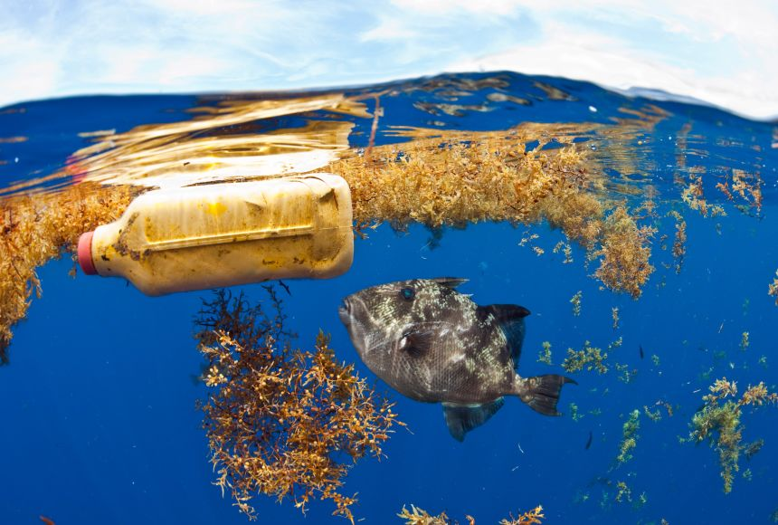

Overview
Marine pollution refers to the contamination of the marine environment with harmful or potentially harmful substances. This can include pollutants such as plastic debris, oil spills, chemicals, and various forms of waste.
Causes
There are several causes of marine pollution, including:
- Plastic waste
- Microplastics: These are tiny plastic particles less than 5 millimeters in size, often originating from the breakdown of larger plastic items or microbeads used in personal care products. Single-Use Plastics: Items like plastic bags, bottles, straws, and packaging contribute significantly to marine pollution due to their widespread use and improper disposal. Ghost Fishing Gear: Lost or abandoned fishing gear, such as nets and lines, continues to trap marine life and degrade marine habitats.
- Oil spills
- Accidental Spills: Major oil spills from tanker accidents or offshore drilling operations can release large volumes of oil into the marine environment, leading to widespread contamination. Chronic Oil Pollution: Continuous small-scale oil leaks from ships, offshore rigs, and other sources also contribute to marine pollution over time.
- Industrial runoff
- Chemical Discharges: Industries often discharge pollutants such as heavy metals, solvents, and acids into nearby water bodies, leading to contamination of marine ecosystems. Thermal Pollution: Industrial activities like power generation can release heated water into water bodies, disrupting marine ecosystems and affecting marine life.
- Chemical pollution
- Pesticides and Herbicides: Agricultural runoff carries pesticides and herbicides into rivers and eventually into the ocean, impacting marine life and ecosystems. Heavy Metals: Industrial activities and urban runoff introduce heavy metals like mercury, lead, and cadmium into marine environments, posing serious health risks to marine organisms.
- Excessive nutrient runoff from agriculture
- Fertilizer Runoff: Excessive use of fertilizers in agriculture leads to nutrient runoff into water bodies, causing eutrophication—a process where excessive nutrients stimulate algae growth, leading to oxygen depletion and harmful algal blooms.
Effects
Marine pollution can have devastating effects on marine ecosystems and wildlife. Some of the effects include:
- Damage to coral reefs and other marine habitats
- Pollution can smother coral reefs and disrupt delicate marine habitats like mangroves and seagrass beds, leading to habitat loss and degradation.
- Loss of biodiversity
- Pollution affects the abundance and diversity of marine species, leading to declines in populations and loss of biodiversity.
- Health problems for marine animals
- Ingestion of plastic debris and contaminated prey can lead to physical harm, digestive blockages, and toxicological effects in marine animals.
- Contamination of seafood
- Pollutants like heavy metals and persistent organic pollutants bioaccumulate in the tissues of marine organisms, posing risks to human health through the consumption of contaminated seafood.
- Impact on tourism and recreation
- Pollution degrades coastal environments, impacting tourism and recreational activities such as swimming, diving, and beachcombing, thus affecting local economies.
Solutions
Addressing marine pollution requires both individual and collective efforts. Some solutions include:
- Reducing plastic use
- Promoting alternatives to single-use plastics, implementing plastic bans, and encouraging recycling and proper waste management practices.
- Proper waste disposal and recycling
- Implementing effective waste collection and recycling programs, including community clean-up efforts and incentivizing recycling initiatives.
- Regulations and enforcement to prevent pollution
- Enacting and enforcing strict regulations on industrial discharges, oil spills, and waste management practices to prevent pollution at its source.
- Investment in clean technologies
- Supporting research and development of clean technologies such as wastewater treatment systems, biodegradable plastics, and renewable energy sources to mitigate pollution.
- Education and awareness campaigns
- Educating the public, policymakers, and industries about the impacts of marine pollution through awareness campaigns, environmental education programs, and community engagement initiatives.
